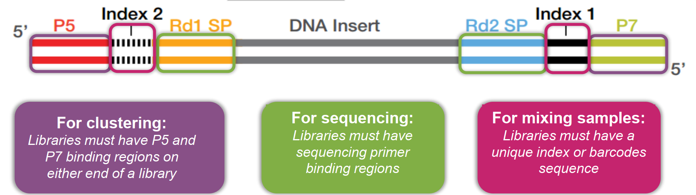

Clusters: Groups of DNA strands positioned closely together. Each clustter represents thousands of copies of the same DNA fragment in a 1-2 micron spot
Flowcell: A thick glass slide with channels or lanes. Cluster generation and sequencing occur here. Each lane is randomly coated with a lawn of oligos that are complementary to library adapters.
- Random Flow cell
- Patterned Flow cell
Reads: The sequences of nucleotides (A, T, C, G) generated from the DNA fragments during sequencing.
Lanes: Individual channels on a flowcell that can be used for separate samples or experiments.
Indexing: Adding unique sequences (barcodes) to DNA fragments to identify different samples in a single sequencing run.
Adapters: Short DNA sequences attached to the ends of DNA fragments to facilitate binding to the flowcell and initiation of sequencing.
Paired-end sequencing: Sequencing both ends of a DNA fragment to provide more information and improve accuracy.
Coverage: The average number of times a nucleotide is read during sequencing, indicating the depth of sequencing.
Read length: The number of nucleotides in a single read generated by the sequencer.
Throughput: The total amount of data generated by a sequencing run, often measured in gigabases (Gb) or terabases (Tb).
Multiplexing: Combining multiple samples in a single sequencing run using unique indexes to save time and cost.
Demultiplexing: The process of separating mixed sequencing data back into individual samples based on their unique indexes.
Quality scores: Numerical values assigned to each nucleotide in a read, indicating the confidence in the accuracy of that base call.
Phred score: A specific type of quality score that represents the probability of an incorrect base call, commonly used in sequencing data analysis.
FASTQ format: A text-based file format that stores both nucleotide sequences and their corresponding quality scores.
BCL files: Binary files generated by Illumina sequencers that contain raw base call data and quality scores before conversion to FASTQ format.
Quality scores
- Illumina uses Phred quality scores (Q scores) to represent the accuracy of each base call in sequencing data.
- The Q score is calculated using the formula: Q = -10 log10(P), where P is the probability of an incorrect base call.
- Higher Q scores indicate higher confidence in the accuracy of the base call.
- For example:
- Q10: 90% accuracy (1 in 10 chance of error)
- Q20: 99% accuracy (1 in 100 chance of error)
- Q30: 99.9% accuracy (1 in 1000 chance of error)
- Q40: 99.99% accuracy (1 in 10,000 chance of error)
- Q50: 99.999% accuracy (1 in 100,000 chance of error)
- The Mathematical Probability of Error
The Phred quality score (Q) is logarithmically related to the base-calling error probability (P). The formula is:
\[ Q = -10 \log_{10} P \]
When you have a Phred score of 10, the probability of a base being wrong is 1 in 10 (10%). When you move to Phred 11, that error rate drops to approximately 8%.
If a read has an average score of less than 11, it means that, statistically, at least one out of every ten bases in that read is likely incorrect. For a 100 bp read, you would expect 10 or more errors. 2. Impact on Alignment (Mapping)
Most aligners (like BWA, Bowtie2, or STAR) use these quality scores to calculate the “Mapping Quality.”
Misalignment: If a read is full of errors, the aligner might place it in the wrong part of the genome because the "wrong" bases happen to match a different location.
Low Mapping Scores: Even if the aligner finds the right spot, it will give the match a very low score. Downstream tools (like variant callers) often ignore reads with low mapping quality anyway.
Computational Waste: Processing thousands of "noisy" reads that will never align correctly takes up CPU time and memory without providing any biological insight.- Preventing False Positives in Variant Calling
This is especially critical for mutation detection or SNP calling.
If you are looking for a rare mutation (e.g., in cancer genomics), a 10% error rate is devastating.
The software won't be able to tell the difference between a real biological mutation and a sequencing error caused by the machine's inability to see the signal clearly.- The “Twilight Zone” of Sequencing
Scores below 11 or 12 are often referred to as being in the “twilight zone” of sequencing. At this level, the “signal-to-noise” ratio of the Illumina flow cell is so low that the base calls are essentially educated guesses.